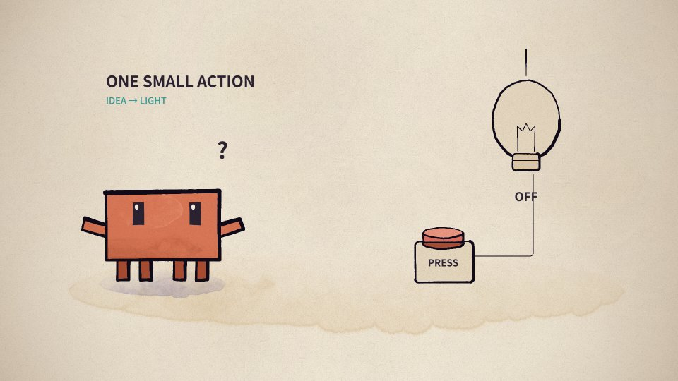
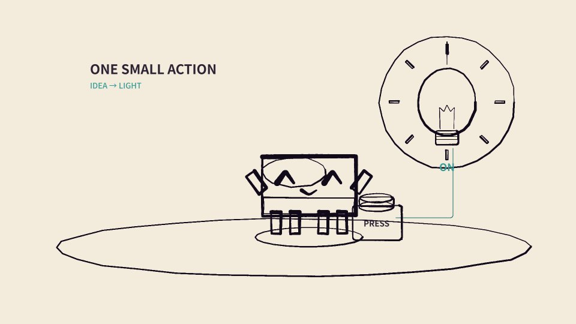

正在读取…
一个故事，走完制作流程
一次按下，
点亮一盏灯。
用一个 6 秒场景，看清楚分镜怎么成为动作、颜色怎样画上去，以及风格在哪里控制。
AI 写分镜与代码→程序绘制带颜色的帧→工具合成 MP4
这是本次新写的场景，复用 PDoomVideo 原始角色和绘画代码。下方播放的是实际重绘、编码后的成片。
先看成品，再拆开看
发现 → 走近 → 按下 → 庆祝

正在读取实际渲染记录…
01 / AI 怎么写动作分镜？
先写“发生什么”，再写“怎么动”。
本次创作要求
做一段 6 秒的二维卡通：角色发现按钮，走过去按下，灯泡亮起，角色开心地庆祝。动作清楚，能比较水彩与平涂效果。
本次 AI 编写了下面四段分镜，再把它们落实为位置、角度、表情和时间条件。点击分镜，跳到实际对应画面。
分镜到代码，中间发生了什么？
“走过去”被写成横坐标的关键帧；“按下后亮灯”被写成时间条件。绘图函数接收算出的姿态，画出当前这一帧。
程序会计算关键时刻之间的动作，因此不需要 AI 分别描述每一张图片。
查看本次真正执行的场景代码 ↗// 摘自本次实际动作函数
x: kf(t, [[0, 460], [.8, 460],
[2.4, 1030], [6, 1030]]),
// 3.25 秒开始亮灯
on: t >= 3.25,
light: t >= 3.25
? easeOut(seg(t, 3.25, 3.65)) : 0,
// 计算完姿态后，再绘制角色
clawd(p.x, p.y, 32, {
aL: p.aL, aR: p.aR, eyes: p.eyes,
col: s.clay, dk: s.clayDk, lt: s.clayLt
});02 / 画面怎样上色？
颜色在每一帧的绘制中产生。
下面是同一帧的四个教学拆分，全部由实际绘画引擎输出。轮廓、铺色、水彩和纸纹逐步组成最终画面。

这是教学用的轮廓视图，方便看清组成画面的形状。实际成帧时，代码按图层顺序绘制每个形状的颜色、纹理和描边。
03 / 风格在哪里控制？
保留动作，修改绘画规则。
上方三种风格使用同一分镜、同一角色形状和同一动作函数。变化来自这里的颜色、填充方式与纸张处理。
水彩渗边 + 墨线
水彩风格使用上游 paint() 包装器和 p5.brush；平涂风格把填充改成统一铺色。
纸纹 + 颗粒合成
水彩风格沿用上游纸张底图和颗粒叠加；平涂风格使用纯色背景。
本次只实现这三种二维风格。改成 3D 或写实画需要进一步改变角色与绘制方法。
04 / 最后怎样变成视频？
72 张实际画面，组成 6 秒成片。
渲染工具每隔 1/12 秒执行一次场景代码，得到 1920×1080 图片。FFmpeg 把 72 张图片按 12 FPS 编码为 H.264 MP4。上方播放按钮播放的就是这个文件。
12 FPS 是本样例的输出设置；上游默认 24 FPS。为了便于观察动作，本样例没有添加声音。